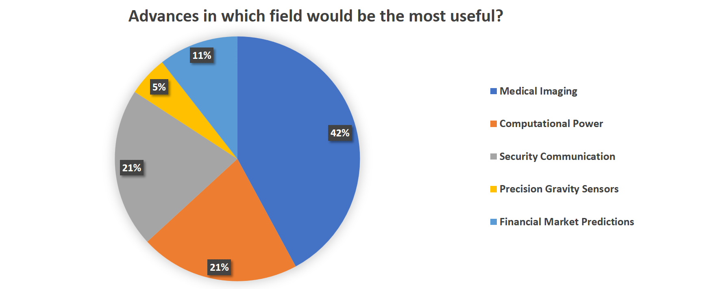

Though the sample size here was small (23 filled surveys) and biased by the location (nearly all responded agree or strongly agree to the statement “I love science!”) we found that the majority of respondents (61%) had heard of quantum technologies, most knew that quantum meant physics (83%) but only 22% could relate quantum with superposition and entanglement! (You can read about these on our Quantum Physics page in the navigation bar).
In the theme of Quantum at Home we also asked which areas people would like to see and you can see from the beautifully made pie chart below that medical imaging comes in as a clear leader - closely followed by computational power.